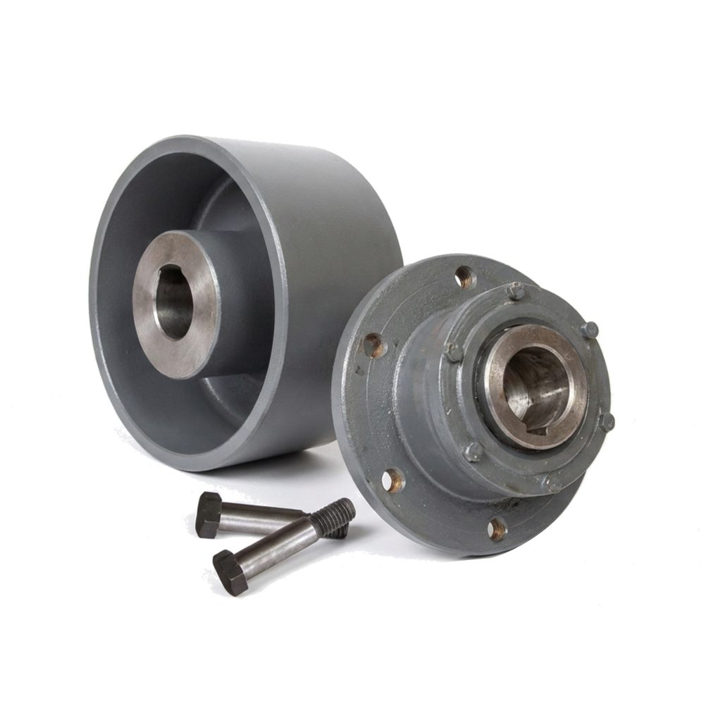
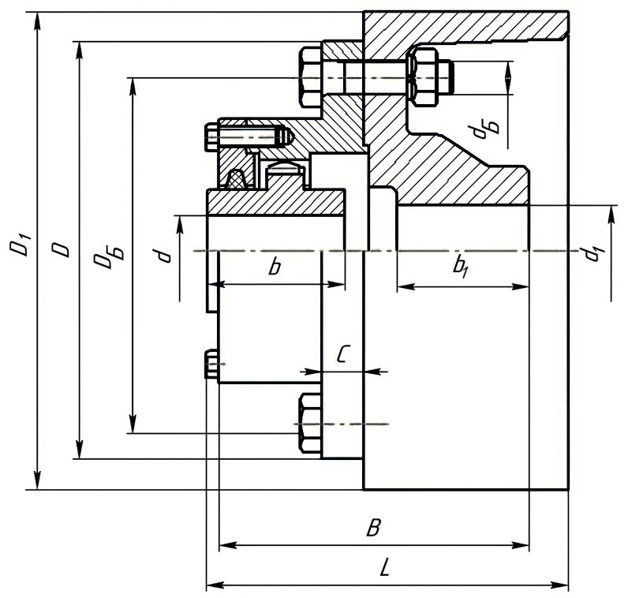

Позвонить: (4842) 75-75-05
Написать сообщение: m-40@inbox.ru
- Главная
- О компании
- Контакты
- Редукторы и мотор-редукторы
- Колеса крановые
- Блоки полиспаста
- Шкивы тормозные
- Муфты
- Крюки и крюковые подвески
- Грузовые барабаны
- Шлицевые детали
- Конические шестерни
- Цилиндрические шестерни
- Запасные части для козловых кранов
- Запасные части для портальных кранов
- Запасные части для башенных кранов
- Техническая информация
- Правовая информация
Муфты → Муфты МЗ с тормозным шкивом
- Главная
- О компании
- Контакты
- Редукторы и мотор-редукторы
- Колеса крановые
- Блоки полиспаста
- Шкивы тормозные
- Муфты
- Крюки и крюковые подвески
- Грузовые барабаны
- Конические шестерни
- Цилиндрические шестерни
- Шлицевые детали
- Запасные части для козловых кранов
- Запасные части для портальных кранов
- Запасные части для башенных кранов
- Техническая информация
- Правовая информация

Муфты МЗ совместно с тормозным шкивом предназначены для соединения соосных промежуточных валов при передаче крутящего момента от 1 до
63000 Н·м,
уменьшения динамических нагрузок, обеспечения надежного останова приводных механизмов при угловых, радиальных и осевых смещениях валов.
В конструкции полумуфты МЗ имеются обойма и втулка, Зубья втулок входят в зацепление с зубьями обойм.
Зубья втулок и обойм имеют бочкообразную форму, благодаря которой и достигается компенсация угловых, осевых и радиальных смещений соединяемых валов друг
относительно друга. На обойму устанавливается крышка с манжетой, препятствующей попаданию пыли и грязи во внутреннюю полость полумуфты.
Перекос оси втулки относительно оси обоймы не превышает 1°30′. Недостаток зубчатых полумуфт - низкая износостойкость, которая обусловлена
износом и деформацией зубьев в процессе эксплуатации из-за толчков и ударов.
Зубчатые муфты с тормозными шкивами выполняются в виде комплектов, соответствующих
зубчатым муфтам с промежуточным валом типа МЗП, когда вместо одной из полумуфт установлен тормозной шкив и имеется вал-вставка.
Масло в полумуфту заливают через специальные отверстия, расположенные в торце зубчатой обоймы.

Основные размеры муфт МЗ с тормозным шкивом
| Тип полумуфты | m | z | b | b1 | D | D1 | DБ | d | d1 | L | C | dБ | n | N, | Mк, | Масса |
| об/мин | кгс·м | кг | ||||||||||||||
| МЗ-1 с тормозным шкивом | 2,5 | 30 | 12 | 20 | 170 | 200 | 140 | 15 | 38 | 115 | 2,5 | 12 | 6 | 6300 | 71 | 22 |
| МЗ-2 с тормозным шкивом | 2,5 | 38 | 15 | 25 | 182 | 200 | 160 | 26 | 50 | 145 | 2,5 | 12 | 8 | 5000 | 140 | 32 |
| МЗ-3 с тормозным шкивом | 3 | 40 | 20 | 28 | 220 | 300 | 195 | 36 | 60 | 175 | 2,5 | 12 | 8 | 4000 | 315 | 60 |
| МЗ-4 с тормозным шкивом | 3 | 48 | 25 | 35 | 250 | 300 | 222 | 43 | 75 | 215 | 2,5 | 16 | 8 | 3350 | 560 | 96 |
| МЗ-5 с тормозным шкивом | 3 | 56 | 25 | 35 | 290 | 300 | 245 | 48 | 90 | 240 | 5 | 20 | 8 | 2800 | 800 | 124 |
| МЗ-6 с тормозным шкивом | 4 | 48 | 30 | 45 | 320 | 400 | 275 | 58 | 110 | 256 | 5 | 20 | 8 | 2500 | 1180 | 160 |
| МЗ-7 с тормозным шкивом | 4 | 56 | 35 | 50 | 350 | 400 | 305 | 68 | 120 | 290 | 5 | 20 | 10 | 2120 | 1900 | 222 |
| МЗ-8 с тормозным шкивом | 4 | 62 | 35 | 50 | 380 | 400 | 335 | 77 | 140 | 330 | 5 | 20 | 12 | 1900 | 2360 | 294 |
| МЗ-9 с тормозным шкивом | 6 | 46 | 42 | 55 | 430 | 500 | 380 | 97 | 160 | 340 | 5 | 24 | 10 | 1700 | 3000 | 348 |
| МЗ-10 с тормозным шкивом | 6 | 56 | 40 | 60 | 490 | 500 | 440 | 117 | 180 | 370 | 5 | 24 | 12 | 1400 | 5000 | 528 |
| МЗ-11 с тормозным шкивом | 8 | 48 | 45 | 70 | 545 | 600 | 495 | 137 | 210 | 410 | 5 | 24 | 12 | 1250 | 7100 | 744 |
| МЗ-12 с тормозным шкивом | 8 | 54 | 50 | 80 | 590 | 600 | 540 | 156 | 240 | 490 | 5 | 24 | 12 | 1120 | 10000 | 1040 |
| МЗ-13 с тормозным шкивом | 10 | 48 | 60 | 90 | 680 | 700 | 620 | 175 | 270 | 530 | 5 | 30 | 14 | 1000 | 17000 | 1500 |
| МЗ-14 с тормозным шкивом | 10 | 54 | 65 | 90 | 730 | 800 | 670 | 195 | 300 | 567 | 5 | 30 | 16 | 900 | 24000 | 1248 |
| МЗ-15 с тормозным шкивом | 10 | 58 | 70 | 100 | 780 | 800 | 720 | 210 | 340 | 646 | 5 | 30 | 18 | 800 | 27000 | 2474 |
ООО «ЦКК» изготавливает полумуфты зубчатые в сборе с тормозным шкивом с расточкой отверстий под необходимый размер, шпон-пазом или шлицевым соединением.
Возможно изготовление шкивов и полумуфт любого типоразмера по чертежам.
Узнать цену на муфты зубчатые в сборе с тормозным шкивом Вы можете здесь либо по телефону:
(4842) 75-75-05
ЦКК
Центр крановых компонентов
г. Калуга, ул. Комсомольская роща, д. 39
© 2026 ООО «Центр Крановых Компонентов»
ИНН 4000026221 · КПП 400001001